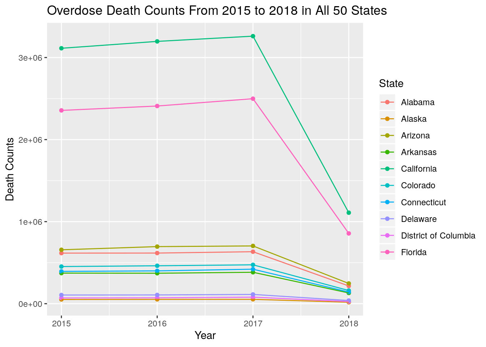
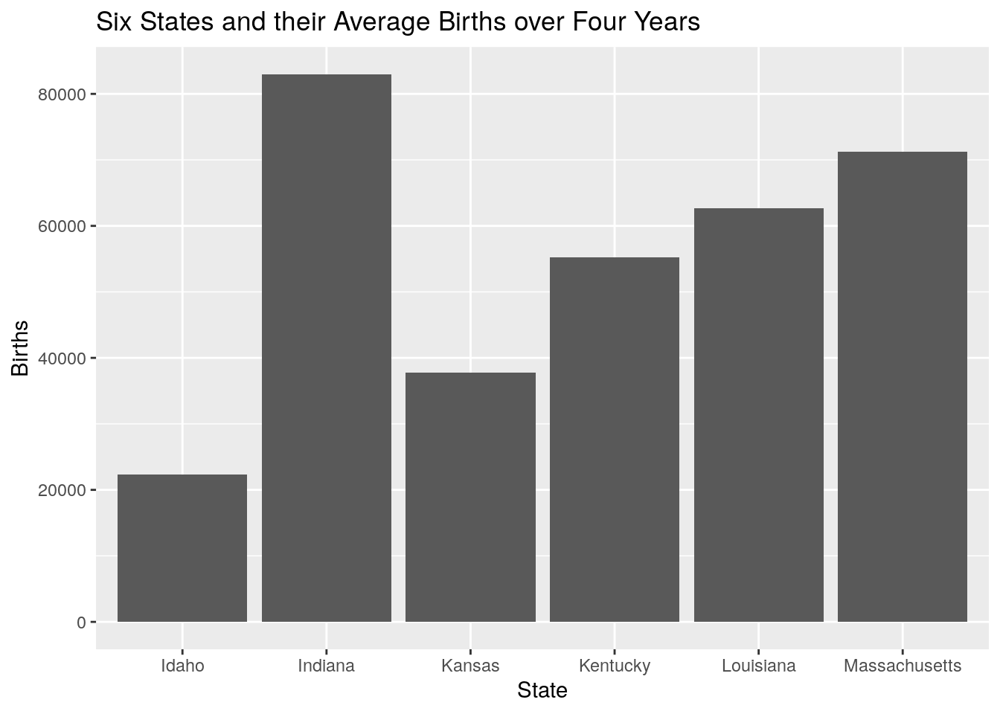
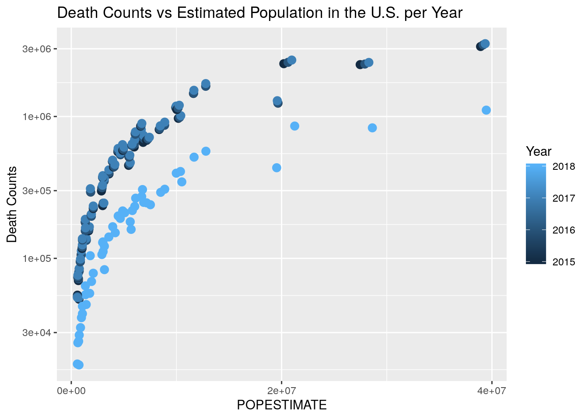
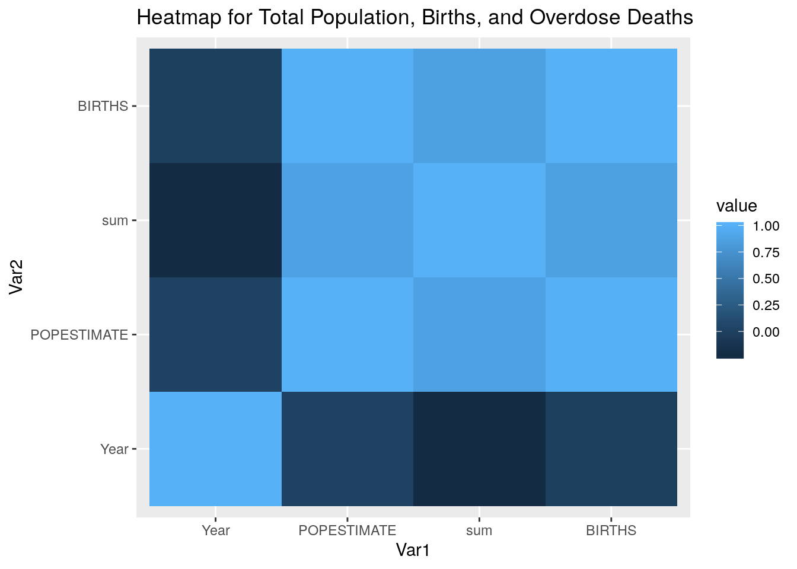
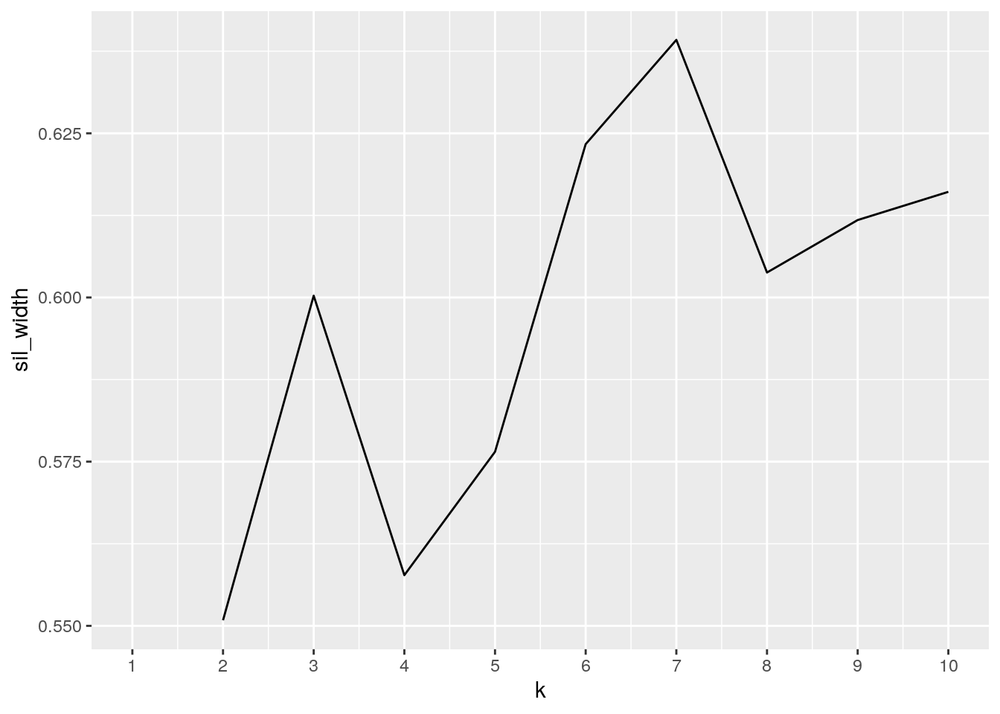
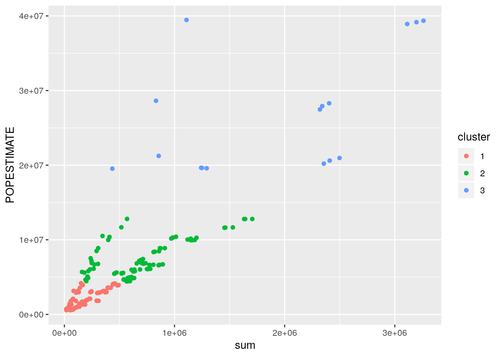
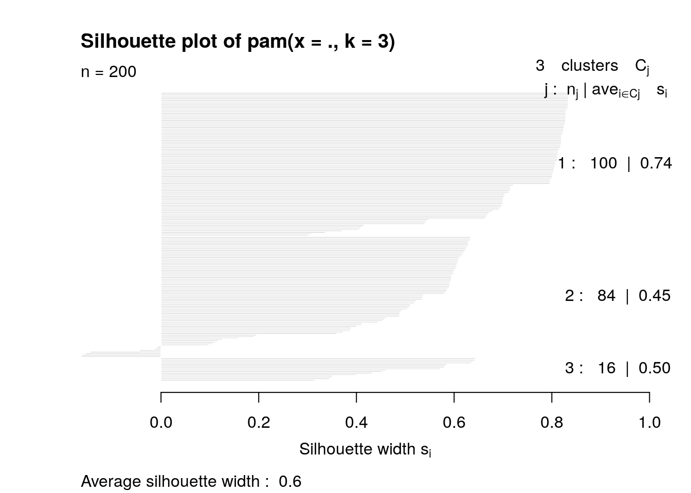

The first dataset acquired shows the overdose death counts in every state of the United States for every month between the years 2015 to 2018. This data was obtained through Kaggle, a dataset database, but the actual values were collected by the Center for Disease Control and Prevention. The variables contained in this dataset are state, year, month, and death counts. This information of the prevalance of overdoses leading to fatality is interesting to me because of my interest in medicine and forensic pathology which largely focuses on leading causes of death in the U.S.
To expand on this project, a second dataset displaying the U.S. population and birth counts by years 2015 to 2018 and all fifty states. This data was directly obtained from the U.S Census Bureau’s Population Division. The variables contained in this dataset are state, population and birth counts for four years, each in their own columns. This information is valuable because it pairs nicely with the first dataset. These two datasets can allow us to see if there is a correlation between growing rates of overdoses and growing populations. The growth of overdoses given the growth of overall populations per state is a association that I figure would be very possible.
library(readr)
library(dplyr)
library(tidyr)
library(tidyverse)
library(reshape2)
library(ggplot2)
Overdose_Counts <- read_csv("Overdose Counts.csv")
Census_Data <- read_csv("Census Data.csv")
Census <- Census_Data %>% pivot_longer(6:13) %>% separate(name,
sep = -4, into = c("var", "year")) %>% pivot_wider(names_from = "var",
values_from = "value") %>% select(-REGION, -DIVISION, -SUMLEV,
-STATE)The census data was not in the preferred tidy format, therefore it was best to make it longer and break up the multiple columns that shared the years and another variable, such as POPESTIMATE2015, into their own columns. Then I made sure to return the data to a wide view so that POPESTIMATE and BIRTHS could have their own columns each. The finishing touched for the editing of the census data were made by removing the unneeded columns, which included -REGION,-DIVISION, -SUMLEV, and -STATE.
Overdose <- Overdose_Counts %>% rename(Counts = "Death Counts")
forreference <- Overdose %>% group_by(State, Year) %>% summarise(sum = sum(Counts))
write.csv(forreference, "overdose.csv")
overdose2 <- read_csv("overdose4use.csv")
census3 <- read_csv("census4use.csv")
truejoined <- overdose2 %>% full_join(census3, by = c(State = "NAME",
Year = "Year")) %>% na.omit()To begin the process of merging, I created a csv of the overdose dataframe so that I could change the names of the the states written as acronyms to their entire name so that I could smoothly combine both datasets by joining them by Year and State name. I quickly wrote the Excel sheet back into the R system. I chose to do a full join, because I wanted to make sure that all values were kept regardless of if they did not have matching pairs. Then I decided to omit the NA’s that were present so that I could only focus on the desired states. Upon doing this drop of NA’s, 20 cases were removed from the combined dataset.
# 1.
truejoined %>% select(POPESTIMATE, sum, Year, State) %>% group_by(State,
Year) %>% summarize(Population_med = median(POPESTIMATE)) %>%
head()## # A tibble: 6 x 3
## # Groups: State [2]
## State Year Population_med
## <chr> <dbl> <dbl>
## 1 Alabama 2015 4852347
## 2 Alabama 2016 4863525
## 3 Alabama 2017 4874486
## 4 Alabama 2018 4887681
## 5 Alaska 2015 737498
## 6 Alaska 2016 741456# 2.
truejoined %>% mutate(BIRTHS2 = BIRTHS^2) %>% group_by(State) %>%
summarize(mean = mean(BIRTHS2), sd = sd(BIRTHS2)) %>% head()## # A tibble: 6 x 3
## State mean sd
## <chr> <dbl> <dbl>
## 1 Alabama 3489181723 70889001.
## 2 Alaska 119326720. 10388069.
## 3 Arizona 7081003069. 369762634.
## 4 Arkansas 1451710112. 55894259.
## 5 California 234835244526. 14439743489.
## 6 Colorado 4317412726. 126004649.# 3.
truejoined %>% arrange(desc(sum)) %>% head()## # A tibble: 6 x 5
## State Year sum POPESTIMATE BIRTHS
## <chr> <dbl> <dbl> <dbl> <dbl>
## 1 California 2017 3260509 39358497 481943
## 2 California 2016 3196735 39167117 490358
## 3 California 2015 3112953 38918045 500380
## 4 Florida 2017 2498457 20963613 224574
## 5 Florida 2016 2409072 20613477 224651
## 6 Texas 2017 2404236 28295273 391340# 4.
filter(truejoined, Year > 2015 & State == "Texas")## # A tibble: 3 x 5
## State Year sum POPESTIMATE BIRTHS
## <chr> <dbl> <dbl> <dbl> <dbl>
## 1 Texas 2016 2341219 27914410 400965
## 2 Texas 2017 2404236 28295273 391340
## 3 Texas 2018 831632 28628666 379544# 5.
filter(truejoined, Year < 2017 & State == "Oregon")## # A tibble: 2 x 5
## State Year sum POPESTIMATE BIRTHS
## <chr> <dbl> <dbl> <dbl> <dbl>
## 1 Oregon 2015 439811. 4015792 45668
## 2 Oregon 2016 444028. 4089976 45593# 6.
quantile(truejoined$POPESTIMATE)## 0% 25% 50% 75% 100%
## 577601 1708881 4303931 6966806 39461588# 7.
truejoined %>% group_by(Year) %>% summarize(max_births = max(BIRTHS))## # A tibble: 4 x 2
## Year max_births
## <dbl> <dbl>
## 1 2015 500380
## 2 2016 490358
## 3 2017 481943
## 4 2018 465017# 8.
truejoined %>% group_by(State) %>% summarize(min_population = min(POPESTIMATE)) %>%
head()## # A tibble: 6 x 2
## State min_population
## <chr> <dbl>
## 1 Alabama 4852347
## 2 Alaska 735139
## 3 Arizona 6829676
## 4 Arkansas 2978048
## 5 California 38918045
## 6 Colorado 5450623# 9.
truejoined %>% filter(State == "Vermont") %>% group_by(State)## # A tibble: 4 x 5
## # Groups: State [1]
## State Year sum POPESTIMATE BIRTHS
## <chr> <dbl> <dbl> <dbl> <dbl>
## 1 Vermont 2015 73226. 625216 5972
## 2 Vermont 2016 73896. 623657 5832
## 3 Vermont 2017 76015. 624344 5775
## 4 Vermont 2018 25435. 624358 5537# 10.
truejoined %>% select(POPESTIMATE, BIRTHS, sum, Year, State) %>%
filter(BIRTHS > 50000) %>% n_distinct()## [1] 105# correlation matrix
my_data <- truejoined[, c(2, 3, 4, 5)]
res <- cor(my_data)
round(res, 2)## Year sum POPESTIMATE BIRTHS
## Year 1.00 -0.22 0.01 -0.01
## sum -0.22 1.00 0.87 0.86
## POPESTIMATE 0.01 0.87 1.00 0.99
## BIRTHS -0.01 0.86 0.99 1.00The first summary statistic that I ran found the median population as selected for by year and state. The second code showed the mean births and standard deviation per state over four years when the original birth counts were mutated by squaring them to show an exponential increase. The third code arranges the overdose death counts from largest to smallest per year and state which shows that California has the largest observations of overdose deaths. The fourth code shows only the statistics for Texas between the years 2016 to 2018. The fifth code shows only the statistics for Oregon between the years 2015 to 2016
The sixth code shows the quantiles for the population estimates of all of the states in the data set. The seventh code shows the maximum births that occured per year from 2015 to 2018. The eighth codes shows the minimum overall population out of the four years for each state. The ninth code shows the summary statistics for Vermont only over the four year span. The tenth code list the number rows that had births over 50,000 per year and state. The final code was created to form a correlation matrix between the numerical variables.
graphdata <- truejoined[1:40, ]
ggplot(data = graphdata, aes(x = Year, y = sum, color = State)) +
geom_point() + ggtitle("Overdose Death Counts From 2015 to 2018 in All 50 States") +
geom_line() + scale_y_continuous(name = "Death Counts")
The graph above shows the first ten states by alphabetical order in a line graph connecting year and death counts. The most apparent relationships within this graph is that California has the highest death counts by a significantly larger number than the other states. The state with the second highest overdose death counts is Florida. This makes sense because these states have a larger population than the rest, but this will be further explained in other graphs. For all states, there also seems to be a decrease in overdose death counts from the year 2015 to 2018.
graphdata2 <- truejoined[54:76, ]
ggplot(graphdata2, aes(x = State)) + geom_bar(aes(y = BIRTHS),
stat = "summary", fun.y = "mean") + ggtitle("Six States and their Average Births over Four Years") +
scale_y_continuous(name = "Births")
The bar graph above shows six states, Idaho, Indiana, Kansas, Kentucky, Louisiana, and Massachusetts, in relation to the average births over the four years. From this graph, we can see that Indiana has the highest birth average and Idaho has the lowest birth average.
ggplot(truejoined, aes(POPESTIMATE, sum, color = Year)) + geom_point(size = 3) +
scale_x_log10(name = "Estimated Population") + scale_y_log10(name = "Death Counts") +
ggtitle("Death Counts vs Estimated Population in the U.S. per Year") +
scale_x_continuous(breaks = scales::pretty_breaks(n = 3)) The graph above shows how the population estimates and death counts per state but filtered by year. From this data we can see that there is a consistent growth pattern seen with the population estimate and the death counts of a state. As the population grows, the death counts of the state also grow. Because the shades of blue describe the different years, it is easy to visualize that 2018 has seen a decrease in overall death counts even with the increasing population sizes.
cordata <- select(truejoined, Year, POPESTIMATE, sum, BIRTHS) %>%
cor()
ggplot(data = melt(cordata), aes(x = Var1, y = Var2, fill = value)) +
geom_tile() + ggtitle("Heatmap for Total Population, Births, and Overdose Deaths") The correlation heatmap above shows that most of the variables do not have strong correlations with one another. The two variables with the largest degree of correlations is overdose births (BIRTHS) and population estimate (POPESTIMATE), which seems like it has a correlation value extremely close to 1. The combination of overdose death counts and births and population estimate and death counts both have a correlation value of about 0.8. All other combination of variables have little to no correlation.
# PAM Clustering
library(cluster)
pam2 <- truejoined %>% select(-State) %>% pam(3)
sil_width <- vector()
for (i in 2:10) {
pam_fit <- truejoined %>% select(-State) %>% pam(i)
sil_width[i] <- pam_fit$silinfo$avg.width
}
ggplot() + geom_line(aes(x = 1:10, y = sil_width)) + scale_x_continuous(name = "k",
breaks = 1:10)
final <- truejoined %>% mutate(cluster = as.factor(pam2$clustering))
confmat <- final %>% group_by(State, Year) %>% count(cluster) %>%
arrange(desc(n)) %>% pivot_wider(names_from = "cluster",
values_from = "n", values_fill = list(n = 0))
confmat## # A tibble: 200 x 5
## # Groups: State, Year [200]
## State Year `2` `1` `3`
## <chr> <dbl> <int> <int> <int>
## 1 Alabama 2015 1 0 0
## 2 Alabama 2016 1 0 0
## 3 Alabama 2017 1 0 0
## 4 Alabama 2018 1 0 0
## 5 Alaska 2015 0 1 0
## 6 Alaska 2016 0 1 0
## 7 Alaska 2017 0 1 0
## 8 Alaska 2018 0 1 0
## 9 Arizona 2015 1 0 0
## 10 Arizona 2016 1 0 0
## # … with 190 more rowspamclust <- truejoined %>% mutate(cluster = as.factor(pam2$clustering))
pamclust %>% ggplot(aes(sum, POPESTIMATE, color = cluster)) +
geom_point()
pamclust %>% group_by(cluster) %>% summarize_if(is.numeric, mean,
na.rm = T)## # A tibble: 3 x 5
## cluster Year sum POPESTIMATE BIRTHS
## <fct> <dbl> <dbl> <dbl> <dbl>
## 1 1 2016. 183336. 1943741. 23890.
## 2 2 2016. 688842. 7369547. 87365.
## 3 3 2016. 1932138. 26915757. 333713.truejoined[pam2$id.med, ]## # A tibble: 3 x 5
## State Year sum POPESTIMATE BIRTHS
## <chr> <dbl> <dbl> <dbl> <dbl>
## 1 Idaho 2016 160433 1682380 22642
## 2 Massachusetts 2015 718949 6794228 71919
## 3 Texas 2015 2320591 27470056 402264round(sum(diag(as.matrix(confmat[, 2:4])))/sum(confmat[, 2:4]),
4)## [1] 0.005plot(pam2, which = 2) The first graph in the clustering section shows that k=6 has the highest sil_width which means that it has a strong structure. The second graph of this section helps explain the clusters the best. The clusters can be seen each in their main three areas, the low population estimates plus low death counts,the medium population estimates plus medium death counts, and the variables both at high amounts. Cluster three shows much more spread than do the other two. When testing how good our cluster solutions are, the number received was 0.005 which is pretty bad, meaning that our data clusters were not quality. Because the average sillouhette width is 0.6, it means that no substantial structure was found. This therefore means that the clusters most likely contains too many outliers and do not follow a convex shape.